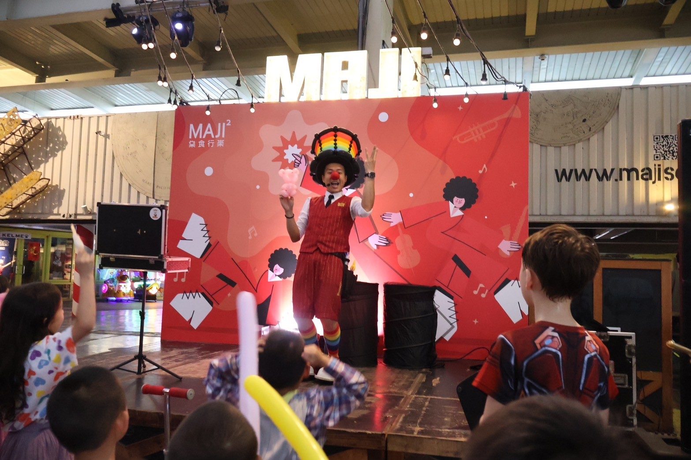
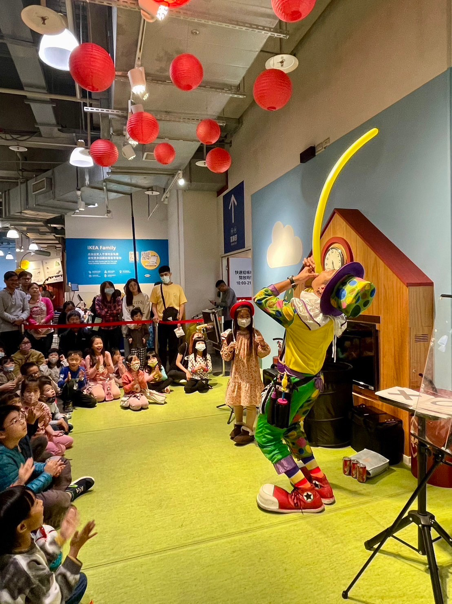
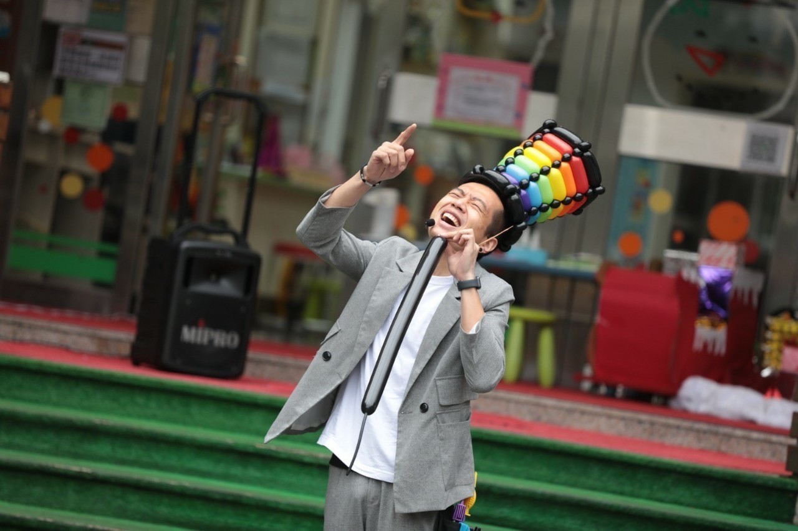
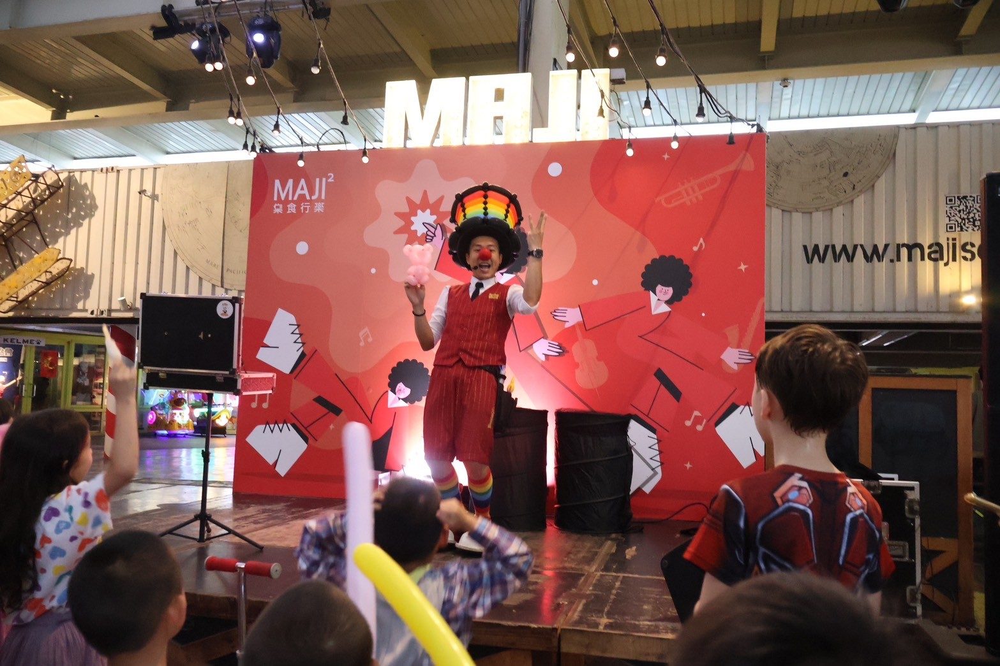
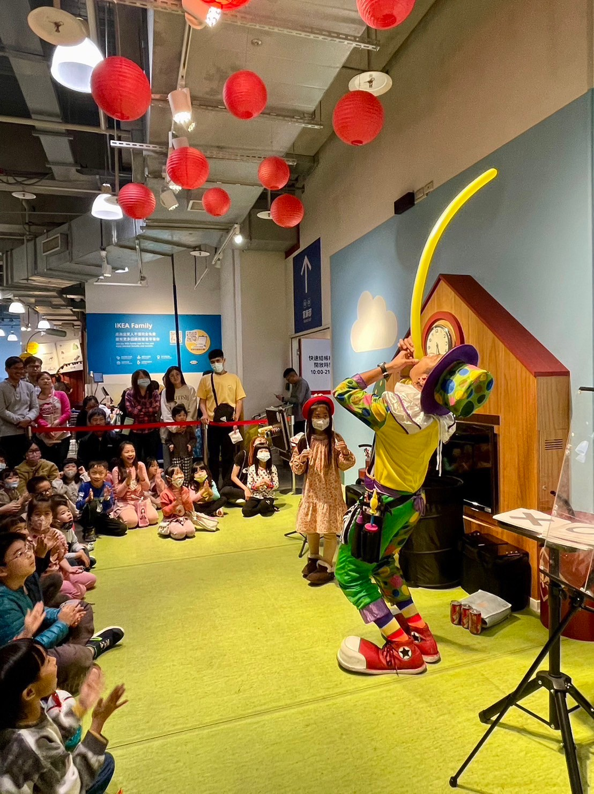
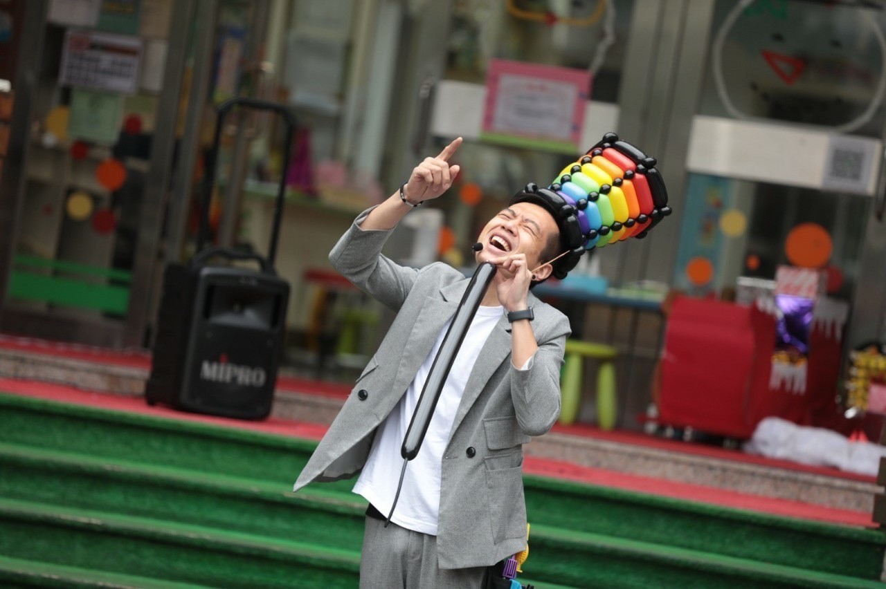

魔術表演
結合氣球造型與互動魔術，打造最吸睛的演出體驗
氣球魔術秀
氣球大叔 Sony 專注於結合魔術與氣球藝術，打造獨特且歡樂的氣球魔術秀。此演出融合互動表演、舞台氣氛營造與視覺驚喜，是親子活動、學校慶典、百貨表演與企業活動的最佳選擇。
- 演出時間：約 30 分鐘
- 氣球贈送：18 件現場造型氣球
- 服務地區：全台皆可，台北新北桃園最多
- 適合場地：百貨公司、市集舞台、學校園遊會、戶外活動
魔術互動亮點
現場表演不僅帶來神奇視覺體驗，更透過與觀眾互動的橋段增加參與感，深受孩子與家長喜愛。
演出照片
 





🎩 魔術表演服務地區與應用場景
想找台北的魔術表演？或是桃園的兒童生日魔術秀？我們提供橫跨台灣北中部九大縣市的專業魔術表演服務，包含：
✅ 地區服務：
台北、新北、基隆、桃園、新竹、苗栗、台中、彰化、宜蘭等地，提供現場魔術、互動魔術與視覺特效魔術。
✅ 主題活動應用：
無論是兒童生日派對、親子活動、開幕表演、百貨快閃、商業尾牙、學校表演、公益演出、社區活動或展場娛樂，我們都能量身打造驚喜演出。
✅ 熱門搜尋詞交叉火力：
台北魔術、台北魔術表演、台北生日魔術、台北派對魔術、台北開幕魔術秀、
桃園魔術、桃園生日魔術、桃園商業魔術、桃園活動魔術表演、
新竹魔術、新竹兒童魔術、新竹魔術演出、新竹社區魔術、
台中魔術、台中學校魔術表演、台中快閃魔術、台中派對魔術、
...以及更多地區與活動類型組合關鍵詞。
若您位於上述地區，正在尋找充滿驚奇與娛樂的魔術演出，歡迎與我們聯繫！
常見問題 FAQ
Q1：你們的魔術表演有哪些類型？適合什麼場合？
A1：我們提供多種類型的魔術表演，包括互動式舞台魔術、近距離魔術、兒童魔術與節慶主題魔術。無論是生日派對、校園活動、百貨商演、開幕典禮或企業家庭日，都能客製化內容，帶來精彩又溫馨的魔術體驗。
Q2：兒童魔術表演會不會太簡單或太誇張？
A2：我們的兒童魔術表演專為 3～10 歲小朋友設計，節奏輕快、視覺效果強，並融入大量互動與笑點。不會太複雜讓小朋友看不懂，也不會太誇張讓他們害怕，確保每個孩子都能開心參與。
Q3：可以安排「魔術＋其他表演」一起進行嗎？
A3：可以！我們可搭配氣球表演、泡泡秀、小丑互動或場地佈置，組合成完整活動方案。這對學校園遊會、商場開幕或親子日特別適合，一次規劃多樣表演，氣氛熱鬧、節目豐富又省時省力。
Q4：魔術表演需要什麼樣的場地或設備？
A4：魔術表演對場地要求不高，只需一個平坦、乾淨的表演空間即可。現場不需要額外提供插座，我們會自備音響設備與無線麥克風，確保表演效果順利又專業。
👉 查看完整 FAQ